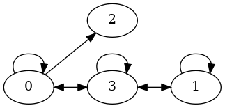
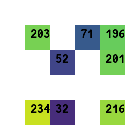
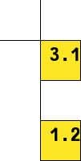
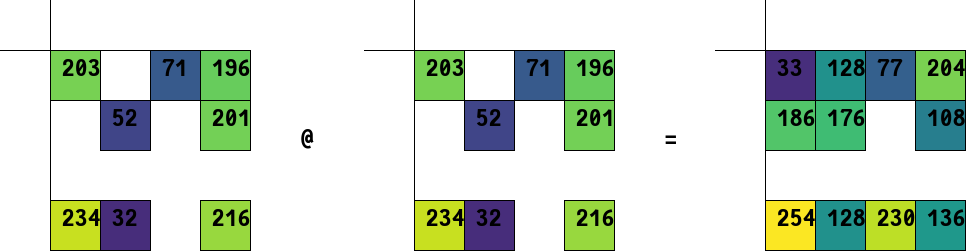

Module pygraphblas.gviz
Helper functions for drawing graphs and matrices with graphviz in doctests and Jupyter notebooks.
>>> from pygraphblas import *
>>> M = Matrix.random(UINT8, 4, 4, 15, seed=8)
>>> g = draw_graph(M, show_weight=False,
... filename='/docs/imgs/Matrix_from_lists3')

>>> g = draw_matrix(M, scale=50,
... filename='/docs/imgs/Matrix_from_lists4')

>>> V = Vector.from_lists([0, 2], [3.14, 1.2])
>>> g = draw_vector(V, scale=50,
... filename='/docs/imgs/Vector_from_lists_1')

>>> g = draw_matrix_op(M, '@', M, (M@M), scale=50,
... filename='/docs/imgs/mxm1')

Expand source code
"""Helper functions for drawing graphs and matrices with graphviz in
doctests and Jupyter notebooks.
>>> from pygraphblas import *
>>> M = Matrix.random(UINT8, 4, 4, 15, seed=8)
>>> g = draw_graph(M, show_weight=False,
... filename='/docs/imgs/Matrix_from_lists3')

>>> g = draw_matrix(M, scale=50,
... filename='/docs/imgs/Matrix_from_lists4')

>>> V = Vector.from_lists([0, 2], [3.14, 1.2])
>>> g = draw_vector(V, scale=50,
... filename='/docs/imgs/Vector_from_lists_1')

>>> g = draw_matrix_op(M, '@', M, (M@M), scale=50,
... filename='/docs/imgs/mxm1')

"""
import operator
from itertools import accumulate
from graphviz import Digraph, Source
from PIL import Image, ImageDraw, ImageFont
from PIL import Image, ImageDraw
from json import dumps
from pathlib import Path
__all__ = [
"draw",
"draw_graph",
"draw_matrix",
"draw_vector",
"draw_layers",
"draw_graph_op",
"draw_matrix_op",
"draw_matrix_layers",
"draw_cy",
"draw_vis",
]
def _str(s, label_width): # pragma: nocover
return str(s)[:label_width]
def draw_vector_dot(V, name="", rankdir="LR", ioff=0, joff=0): # pragma: nocover
g = Digraph(name)
g.attr(rankdir=rankdir, ranksep="1")
for i, v in V:
g.node(str(i + ioff), label="%s:%s" % (str(i), str(v)))
return g
def draw_graph(
M,
name="",
rankdir="LR",
show_weight=True,
concentrate=True,
label_vector=None,
label_width=None,
size_vector=None,
size_scale=1.0,
ioff=0,
joff=0,
filename=None,
graph_attr=None,
node_attr=None,
edge_attr=None,
): # pragma: nocover
g = Digraph(name)
g.attr(rankdir=rankdir, overlap="false", concentrate="true")
if graph_attr:
g.attr(**graph_attr)
if node_attr:
g.attr("node", **node_attr)
if edge_attr:
g.attr("edge", **edge_attr)
if isinstance(label_vector, list):
labeler = lambda v, i: v[i]
else:
labeler = lambda v, i: v.get(i)
for i, j, v in M:
size = _str(size_vector[i] * size_scale, label_width) if size_vector else "0.5"
ilabel = _str(labeler(label_vector, i), label_width) if label_vector else str(i)
jlabel = _str(labeler(label_vector, j), label_width) if label_vector else str(j)
vlabel = _str(v, label_width) if show_weight else None
inode = g.node(str(i + ioff), width=size, height=size, label=ilabel)
jnode = g.node(str(j + joff), width=size, height=size, label=jlabel)
if node_attr:
jnode.attr(**node_attr)
w = str(v)
g.edge(
str(i + ioff),
str(j + joff),
label=vlabel,
weight=w,
tooltip=vlabel,
len=str(0.3),
)
if filename is not None:
g.render(filename, format="png")
return g
def draw_layers(M, name="", rankdir="LR", label_width=None): # pragma: nocover
g = Digraph(name)
g.attr(rankdir=rankdir, ranksep="1")
for l, m in enumerate(M):
with g.subgraph() as s:
s.attr(rank="same", rankdir="TB")
for i in range(m.nrows):
si = (l * m.nrows) + i
s.node(str(si), label=_str(si, label_width), width="0.5")
if i < m.nrows - 1:
ni = si + 1
s.edge(str(si), str(ni), style="invis", minlen="0", weight="1000")
g.edge(
str(si - m.nrows + 1),
str(si + 1),
weight="10000000",
style="invis",
minlen="0",
)
with g.subgraph() as s:
s.attr(rank="same", rankdir="LR")
for j in range(M[-1].nrows):
sj = (len(M) * m.nrows) + j
s.node(str(sj), label=_str(j, label_width), width="0.5")
if j < M[-1].nrows - 1:
nj = sj + 1
s.edge(str(sj), str(nj), style="invis")
for l, m in enumerate(M):
for i, j, _ in m:
si = (l * m.nrows) + i
sj = ((l + 1) * m.nrows) + j
g.edge(str(si), str(sj))
return g
def draw(obj, name="", **kws): # pragma: nocover
from pygraphblas import Matrix, Vector
if isinstance(obj, Matrix):
return draw_graph(obj, name, **kws)
if isinstance(obj, Vector):
return draw_vector_dot(obj, name, **kws)
def draw_graph_op(left, op, right, result): # pragma: nocover
from pygraphblas import Matrix, Vector
ioff = 0
joff = 0
def draw(obj, name="", **kws):
nonlocal ioff, joff
if isinstance(obj, Matrix):
ioff += obj.nrows
joff += obj.ncols
return draw_graph(obj, name=name, ioff=ioff, joff=joff)
if isinstance(obj, Vector):
ioff += obj.size
joff += obj.size
return draw_vector_dot(obj, name=name, ioff=ioff, joff=joff)
g = Digraph()
g.subgraph(draw(left, name="cluster_left"))
g.node(op, width="0.5")
g.subgraph(draw(right, name="cluster_right"))
g.node("=", width="0.5")
g.subgraph(draw(result, name="cluster_result"))
return g
def draw_vector(
V, scale=10, axes=True, labels=False, mode=None, cmap="viridis", filename=None
): # pragma: nocover
if not isinstance(V, Vector):
raise TypeError
def draw_matrix(
M,
scale=10,
axes=True,
labels=False,
mode=None,
cmap="viridis",
filename=None,
column=True,
font_path=Path("/pygraphblas/demo"),
): # pragma: nocover
from pygraphblas import BOOL, FP32, FP64, Matrix, Vector
cosmic_font = ImageFont.truetype(
str(font_path / "FantasqueSansMono-Bold.ttf"), int(scale * 0.5)
)
if isinstance(M, Vector):
return draw_vector(
M,
scale=scale,
axes=axes,
labels=labels,
mode=mode,
cmap=cmap,
filename=filename,
column=column,
)
if mode is None:
mode = "RGB"
if cmap is not None:
import matplotlib.pyplot as plt
from matplotlib.colors import rgb2hex
cmap = plt.get_cmap(cmap)
sx = ((M.ncols + 1) * scale) + 1
sy = ((M.nrows + 1) * scale) + 1
im = Image.new(mode, (sx, sy), color="white")
d = ImageDraw.Draw(im)
for i, j, v in M:
y = ((i + 1) * scale) + scale / 2
x = ((j + 1) * scale) + scale / 2
offset = int(scale / 2)
if M.type is BOOL:
d.rectangle(
(x - offset, y - offset, x + scale - offset, y + scale - offset),
fill="#3333ff" if v else "#ff3333",
outline="black",
)
elif M.type in [FP32, FP64] and cmap:
d.rectangle(
(x - offset, y - offset, x + scale - offset, y + scale - offset),
fill=rgb2hex(cmap(v)),
outline="black",
)
else:
d.rectangle(
(x - offset, y - offset, x + scale - offset, y + scale - offset),
fill=rgb2hex(cmap(int(v) % 255)),
outline="black",
)
d.text(
((x - offset) + (scale / 4), (y - offset) + (scale / 10)),
str(v)[:4],
fill="black",
font=cosmic_font,
)
if axes:
d.line((0, scale, im.size[0], scale), fill="black")
d.line((scale, 0, scale, im.size[1]), fill="black")
if labels:
for i in range(M.ncols):
d.text(
(((i + 1) * scale) + scale / 5, scale / 5),
str(i),
fill="black",
font=cosmic_font,
)
for j in range(M.nrows):
d.text(
(scale / 5, ((j + 1) * scale) + scale / 5),
str(j),
fill="black",
font=cosmic_font,
)
if filename is not None:
im.save(filename + ".png", "PNG")
return im
def draw_vector(V, column=True, *args, **kwargs): # pragma: nocover
from pygraphblas import Matrix
if column:
A = Matrix.sparse(V.type, V.size, 1)
A[:, 0] = V
else:
A = Matrix.sparse(V.type, 1, V.size)
A[0, :] = V
return draw_matrix(A, *args, **kwargs)
def draw_matrix_op(
left,
op,
right,
result,
font_path=Path("/pygraphblas/demo"),
filename=None,
**kwargs,
): # pragma: nocover
scale = kwargs["scale"]
cosmic_font = ImageFont.truetype(
str(font_path / "FantasqueSansMono-Bold.ttf"), int(scale * 0.5)
)
kwargs["font_path"] = font_path
left = draw_matrix(left, **kwargs)
right = draw_matrix(right, **kwargs)
result = draw_matrix(result, **kwargs)
op_width = cosmic_font.getsize(op)[0]
spacer = int(scale * 2)
width = left.size[0] + op_width + spacer + right.size[0] + spacer + result.size[0]
height = max(op_width + spacer, left.size[1], right.size[1], result.size[1])
im = Image.new(left.mode, (width, height), color="white")
d = ImageDraw.Draw(im)
im.paste(left, (0, 0))
d.text(
(left.size[0] + int(spacer / 2), height / 2), op, fill="black", font=cosmic_font
)
im.paste(right, (left.size[0] + op_width + spacer, 0))
d.text(
(left.size[0] + right.size[0] + op_width + (spacer * 1.5), height / 2),
"=",
fill="black",
font=cosmic_font,
)
im.paste(result, (left.size[0] + right.size[0] + op_width + spacer + spacer, 0))
if filename is not None:
im.save(filename + ".png", "PNG")
return im
def draw_matrix_layers(layers, **kwargs): # pragma: nocover
filename = kwargs.pop("filename", None)
imgs = [draw_matrix(i, **kwargs) for i in layers]
widths = [0] + list(accumulate((i.size[0] for i in imgs), operator.add))
width = sum(widths)
height = max(i.size[1] for i in imgs)
im = Image.new(imgs[0].mode, (width, height), color="white")
for c, i in enumerate(imgs):
im.paste(i, (widths[c], 0))
if filename is not None:
im.save(filename + ".png", "PNG")
return im
def cy_matrix(M): # pragma: nocover
nodes = dict()
edges = []
for i, j, v in M:
edges.append(
{"data": {"id": f"{i}:{j}:{v}", "source": str(i), "target": str(j)}}
)
if i not in nodes:
nodes[i] = {"data": {"id": str(i)}}
if j not in nodes:
nodes[j] = {"data": {"id": str(j)}}
return {
"directed": True,
"elements": {"nodes": list(nodes.values()), "edges": edges},
}
my_style = [
{
"selector": "node",
"style": {
"background-color": "blue",
"label": "data(name)",
"width": 2,
"height": 2,
"shape": "circle",
"color": "#EEEEEE",
"font-weight": 400,
"text-halign": "right",
"text-valign": "bottom",
"font-size": 12,
},
},
{
"selector": "edge",
"style": {
"width": 0.2,
"opacity": 1,
"line-color": "green",
},
},
]
def draw_cy(M, visual_style=my_style): # pragma: nocover
from cyjupyter import Cytoscape
return Cytoscape(data=cy_matrix(M), visual_style=visual_style)
def draw_vis(M, **kwargs): # pragma: nocover
from pyvis import network as net
N = net.Network(**kwargs)
for i, j, v in M:
N.add_node(i, i, title=str(i))
N.add_node(j, j, title=str(j))
N.add_edge(i, j, value=str(v))
return NFunctions
def draw(obj, name='', **kws)-
Expand source code
def draw(obj, name="", **kws): # pragma: nocover from pygraphblas import Matrix, Vector if isinstance(obj, Matrix): return draw_graph(obj, name, **kws) if isinstance(obj, Vector): return draw_vector_dot(obj, name, **kws) def draw_cy(M, visual_style=[{'selector': 'node', 'style': {'background-color': 'blue', 'label': 'data(name)', 'width': 2, 'height': 2, 'shape': 'circle', 'color': '#EEEEEE', 'font-weight': 400, 'text-halign': 'right', 'text-valign': 'bottom', 'font-size': 12}}, {'selector': 'edge', 'style': {'width': 0.2, 'opacity': 1, 'line-color': 'green'}}])-
Expand source code
def draw_cy(M, visual_style=my_style): # pragma: nocover from cyjupyter import Cytoscape return Cytoscape(data=cy_matrix(M), visual_style=visual_style) def draw_graph(M, name='', rankdir='LR', show_weight=True, concentrate=True, label_vector=None, label_width=None, size_vector=None, size_scale=1.0, ioff=0, joff=0, filename=None, graph_attr=None, node_attr=None, edge_attr=None)-
Expand source code
def draw_graph( M, name="", rankdir="LR", show_weight=True, concentrate=True, label_vector=None, label_width=None, size_vector=None, size_scale=1.0, ioff=0, joff=0, filename=None, graph_attr=None, node_attr=None, edge_attr=None, ): # pragma: nocover g = Digraph(name) g.attr(rankdir=rankdir, overlap="false", concentrate="true") if graph_attr: g.attr(**graph_attr) if node_attr: g.attr("node", **node_attr) if edge_attr: g.attr("edge", **edge_attr) if isinstance(label_vector, list): labeler = lambda v, i: v[i] else: labeler = lambda v, i: v.get(i) for i, j, v in M: size = _str(size_vector[i] * size_scale, label_width) if size_vector else "0.5" ilabel = _str(labeler(label_vector, i), label_width) if label_vector else str(i) jlabel = _str(labeler(label_vector, j), label_width) if label_vector else str(j) vlabel = _str(v, label_width) if show_weight else None inode = g.node(str(i + ioff), width=size, height=size, label=ilabel) jnode = g.node(str(j + joff), width=size, height=size, label=jlabel) if node_attr: jnode.attr(**node_attr) w = str(v) g.edge( str(i + ioff), str(j + joff), label=vlabel, weight=w, tooltip=vlabel, len=str(0.3), ) if filename is not None: g.render(filename, format="png") return g def draw_graph_op(left, op, right, result)-
Expand source code
def draw_graph_op(left, op, right, result): # pragma: nocover from pygraphblas import Matrix, Vector ioff = 0 joff = 0 def draw(obj, name="", **kws): nonlocal ioff, joff if isinstance(obj, Matrix): ioff += obj.nrows joff += obj.ncols return draw_graph(obj, name=name, ioff=ioff, joff=joff) if isinstance(obj, Vector): ioff += obj.size joff += obj.size return draw_vector_dot(obj, name=name, ioff=ioff, joff=joff) g = Digraph() g.subgraph(draw(left, name="cluster_left")) g.node(op, width="0.5") g.subgraph(draw(right, name="cluster_right")) g.node("=", width="0.5") g.subgraph(draw(result, name="cluster_result")) return g def draw_layers(M, name='', rankdir='LR', label_width=None)-
Expand source code
def draw_layers(M, name="", rankdir="LR", label_width=None): # pragma: nocover g = Digraph(name) g.attr(rankdir=rankdir, ranksep="1") for l, m in enumerate(M): with g.subgraph() as s: s.attr(rank="same", rankdir="TB") for i in range(m.nrows): si = (l * m.nrows) + i s.node(str(si), label=_str(si, label_width), width="0.5") if i < m.nrows - 1: ni = si + 1 s.edge(str(si), str(ni), style="invis", minlen="0", weight="1000") g.edge( str(si - m.nrows + 1), str(si + 1), weight="10000000", style="invis", minlen="0", ) with g.subgraph() as s: s.attr(rank="same", rankdir="LR") for j in range(M[-1].nrows): sj = (len(M) * m.nrows) + j s.node(str(sj), label=_str(j, label_width), width="0.5") if j < M[-1].nrows - 1: nj = sj + 1 s.edge(str(sj), str(nj), style="invis") for l, m in enumerate(M): for i, j, _ in m: si = (l * m.nrows) + i sj = ((l + 1) * m.nrows) + j g.edge(str(si), str(sj)) return g def draw_matrix(M, scale=10, axes=True, labels=False, mode=None, cmap='viridis', filename=None, column=True, font_path=PosixPath('/pygraphblas/demo'))-
Expand source code
def draw_matrix( M, scale=10, axes=True, labels=False, mode=None, cmap="viridis", filename=None, column=True, font_path=Path("/pygraphblas/demo"), ): # pragma: nocover from pygraphblas import BOOL, FP32, FP64, Matrix, Vector cosmic_font = ImageFont.truetype( str(font_path / "FantasqueSansMono-Bold.ttf"), int(scale * 0.5) ) if isinstance(M, Vector): return draw_vector( M, scale=scale, axes=axes, labels=labels, mode=mode, cmap=cmap, filename=filename, column=column, ) if mode is None: mode = "RGB" if cmap is not None: import matplotlib.pyplot as plt from matplotlib.colors import rgb2hex cmap = plt.get_cmap(cmap) sx = ((M.ncols + 1) * scale) + 1 sy = ((M.nrows + 1) * scale) + 1 im = Image.new(mode, (sx, sy), color="white") d = ImageDraw.Draw(im) for i, j, v in M: y = ((i + 1) * scale) + scale / 2 x = ((j + 1) * scale) + scale / 2 offset = int(scale / 2) if M.type is BOOL: d.rectangle( (x - offset, y - offset, x + scale - offset, y + scale - offset), fill="#3333ff" if v else "#ff3333", outline="black", ) elif M.type in [FP32, FP64] and cmap: d.rectangle( (x - offset, y - offset, x + scale - offset, y + scale - offset), fill=rgb2hex(cmap(v)), outline="black", ) else: d.rectangle( (x - offset, y - offset, x + scale - offset, y + scale - offset), fill=rgb2hex(cmap(int(v) % 255)), outline="black", ) d.text( ((x - offset) + (scale / 4), (y - offset) + (scale / 10)), str(v)[:4], fill="black", font=cosmic_font, ) if axes: d.line((0, scale, im.size[0], scale), fill="black") d.line((scale, 0, scale, im.size[1]), fill="black") if labels: for i in range(M.ncols): d.text( (((i + 1) * scale) + scale / 5, scale / 5), str(i), fill="black", font=cosmic_font, ) for j in range(M.nrows): d.text( (scale / 5, ((j + 1) * scale) + scale / 5), str(j), fill="black", font=cosmic_font, ) if filename is not None: im.save(filename + ".png", "PNG") return im def draw_matrix_layers(layers, **kwargs)-
Expand source code
def draw_matrix_layers(layers, **kwargs): # pragma: nocover filename = kwargs.pop("filename", None) imgs = [draw_matrix(i, **kwargs) for i in layers] widths = [0] + list(accumulate((i.size[0] for i in imgs), operator.add)) width = sum(widths) height = max(i.size[1] for i in imgs) im = Image.new(imgs[0].mode, (width, height), color="white") for c, i in enumerate(imgs): im.paste(i, (widths[c], 0)) if filename is not None: im.save(filename + ".png", "PNG") return im def draw_matrix_op(left, op, right, result, font_path=PosixPath('/pygraphblas/demo'), filename=None, **kwargs)-
Expand source code
def draw_matrix_op( left, op, right, result, font_path=Path("/pygraphblas/demo"), filename=None, **kwargs, ): # pragma: nocover scale = kwargs["scale"] cosmic_font = ImageFont.truetype( str(font_path / "FantasqueSansMono-Bold.ttf"), int(scale * 0.5) ) kwargs["font_path"] = font_path left = draw_matrix(left, **kwargs) right = draw_matrix(right, **kwargs) result = draw_matrix(result, **kwargs) op_width = cosmic_font.getsize(op)[0] spacer = int(scale * 2) width = left.size[0] + op_width + spacer + right.size[0] + spacer + result.size[0] height = max(op_width + spacer, left.size[1], right.size[1], result.size[1]) im = Image.new(left.mode, (width, height), color="white") d = ImageDraw.Draw(im) im.paste(left, (0, 0)) d.text( (left.size[0] + int(spacer / 2), height / 2), op, fill="black", font=cosmic_font ) im.paste(right, (left.size[0] + op_width + spacer, 0)) d.text( (left.size[0] + right.size[0] + op_width + (spacer * 1.5), height / 2), "=", fill="black", font=cosmic_font, ) im.paste(result, (left.size[0] + right.size[0] + op_width + spacer + spacer, 0)) if filename is not None: im.save(filename + ".png", "PNG") return im def draw_vector(V, column=True, *args, **kwargs)-
Expand source code
def draw_vector(V, column=True, *args, **kwargs): # pragma: nocover from pygraphblas import Matrix if column: A = Matrix.sparse(V.type, V.size, 1) A[:, 0] = V else: A = Matrix.sparse(V.type, 1, V.size) A[0, :] = V return draw_matrix(A, *args, **kwargs) def draw_vis(M, **kwargs)-
Expand source code
def draw_vis(M, **kwargs): # pragma: nocover from pyvis import network as net N = net.Network(**kwargs) for i, j, v in M: N.add_node(i, i, title=str(i)) N.add_node(j, j, title=str(j)) N.add_edge(i, j, value=str(v)) return N